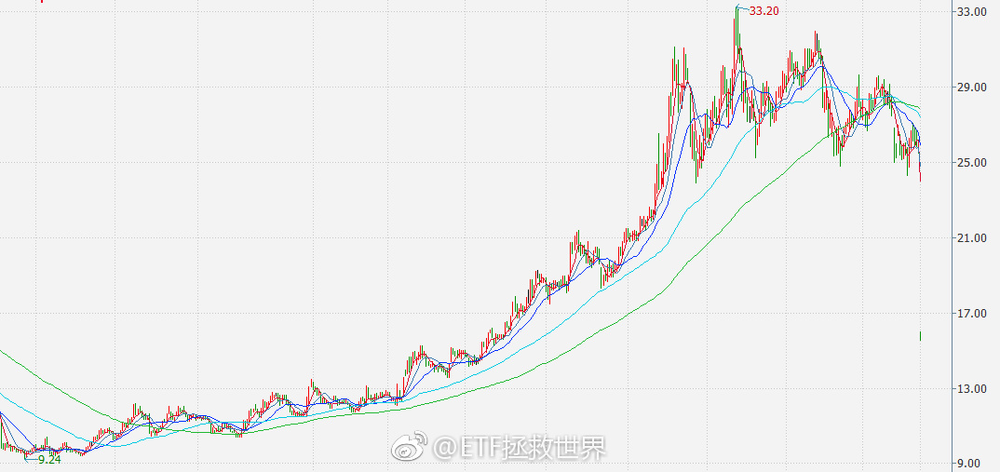

回复@lzg54:左右互搏，我是真的看不懂。//@lzg54:本来E大担心国家队，现在好了，熊市发独角兽，估计今年计划就能打满。@ETF拯救世界:今天收盘后，计划今年年度计算可能就变成浮亏了。大概0.2%左右吧。中证500已经下跌10%了。。看了一下，今年A股下跌家数78%。跌幅中位数是-13%。跌幅超过20%的股票有1089只……当然，上涨的也有22%……不过我估计今年计划不会是亏损。年底看。
回复@宋隆河:不是第三轮计划浮亏，是今年。计划还有十几个点的收益扛造。对应大盘指数下跌大概要30%。也就是说，同期中证500要跌80%，第三轮计划才会浮亏。//@宋隆河:传说中的浮亏终于来了@ETF拯救世界:今天收盘后，计划今年年度计算可能就变成浮亏了。大概0.2%左右吧。中证500已经下跌10%了。。看了一下，今年A股下跌家数78%。跌幅中位数是-13%。跌幅超过20%的股票有1089只……当然，上涨的也有22%……不过我估计今年计划不会是亏损。年底看。
今天收盘后，计划今年年度计算可能就变成浮亏了。大概0.2%左右吧。中证500已经下跌10%了。。看了一下，今年A股下跌家数78%。跌幅中位数是-13%。跌幅超过20%的股票有1089只……当然，上涨的也有22%……不过我估计今年计划不会是亏损。年底看。
回复@佳峻爸2013:我们的A股仓位超过60%-70%大概率就快了。//@佳峻爸2013:熊市啥时候能结束？等了好久了…@ETF拯救世界:这一轮熊市，你能赚多少我觉得就不要预期了。但你应该知道一件事。就是，无论有多熊，你在资本市场死去的可能性，几乎没有。舒服。
回复@香克斯芒007:投入感情。控制节奏。加油，你行的。//@香克斯芒007:E大。我就不夸你的投资水平了，我就想问，为什么连你的文笔都这么的优秀？为什么？你是不是开挂了？@ETF拯救世界 写作是不是你有特殊的技巧？@ETF拯救世界:个股。一天，40%。A股也一样，4个跌停也没差。你说，你低位买的吧，利润减少40%。高位买的吧，不说了。多少年白干了。个股还是不能单压，还是得分散配置。所谓集中投资满仓穿越牛熊，只是那些幸存者偏差剩下的人跟你扯的蛋。你信了，也有可能是幸运的，也有可能不是。自己想清楚就行。不过，最垃圾的，恐怕就是那些根本没赚钱还忽悠你集中投资满仓穿越牛熊的人……
个股。一天，40%。A股也一样，4个跌停也没差。你说，你低位买的吧，利润减少40%。高位买的吧，不说了。多少年白干了。个股还是不能单压，还是得分散配置。所谓集中投资满仓穿越牛熊，只是那些幸存者偏差剩下的人跟你扯的蛋。你信了，也有可能是幸运的，也有可能不是。自己想清楚就行。不过，最垃圾的，恐怕就是那些根本没赚钱还忽悠你集中投资满仓穿越牛熊的人……